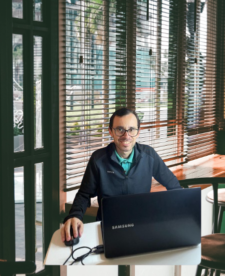

Home
Sobre Mim
Currículo
Olá, me chamo Marcos Czepurko.
Sou estudante de desenvolvimento Web.
Nesse projeto estou colocando em prática meus conhecimentos em
HTML e CSS.
Acesse minhas redes:
Instagram
linkedin
GitHub
